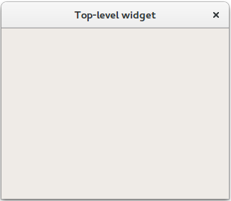

Widgets Tutorial - Creating a Window
If a widget is created without a parent, it is treated as a window, or top-level widget, when it is shown. Since it has no parent object to ensure that it is deleted when no longer needed, it is up to the developer to keep track of the top-level widgets in an application.
In the following example, we use QWidget to create and show a window with a default size:
#include <QtWidgets> int main(int argc, char *argv[]) { QApplication app(argc, argv); QWidget window; window.resize(320, 240); window.show(); window.setWindowTitle( QApplication::translate("toplevel", "Top-level widget")); return app.exec(); } |  |
To create a real GUI, we need to place widgets inside the window. To do this, we pass a QWidget instance to a widget's constructor, as we will demonstrate in the next part of this tutorial.